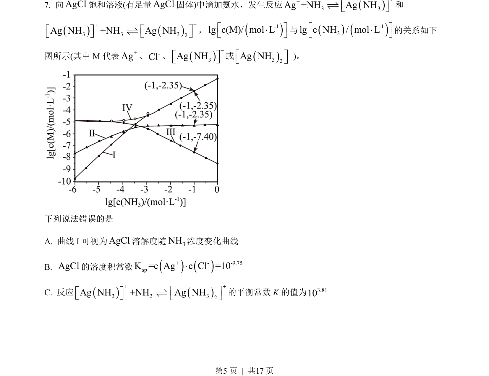
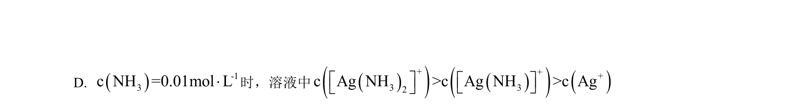
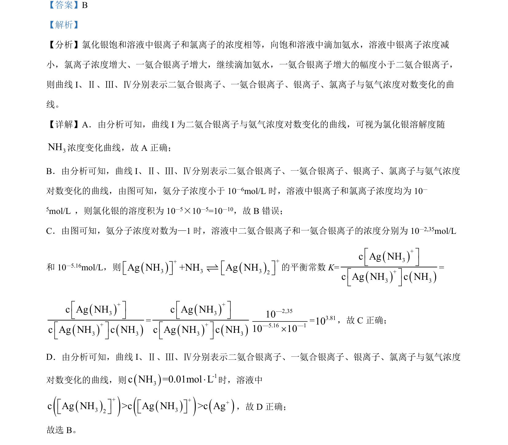

考点：沉淀溶解平衡 配合平衡 溶度积常数 平衡常数


考查AgCl与氨水反应的沉淀溶解平衡及配合平衡，通过图像分析离子浓度关系和平衡常数计算。

📄 原 PDF 第 5 页：
素材/真题/吉林/2008-2024·（吉林）化学高考真题/2023年高考化学试卷（新课标）（解析卷）.pdf
下列说法错误的是 A. 曲线 I 可视为AgCl溶解度随3NH浓度变化曲线 B. AgCl的溶度积常数()()+ - -9.75spK =c Ag c Cl =10× C. 反应()()++3 3 32Ag NH +NH Ag NHé ùé ùë ûë ûƒ的平衡常数 K的值为3.8110